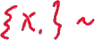
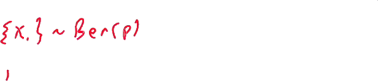
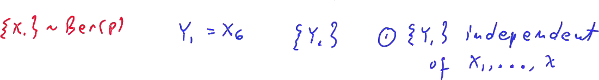
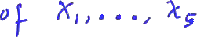
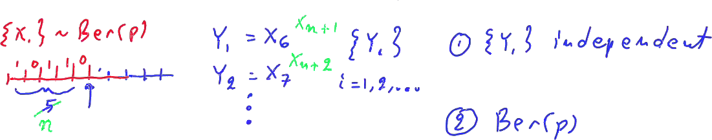
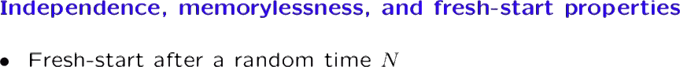
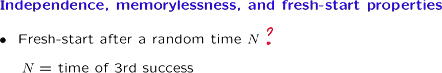

In this segment we develop some consequences of the independence assumption that we have made on the trials that constitute a Bernoulli process.

These properties will be pretty intuitive, but they play an important role. They're helpful in solving problems, and they're also quite helpful in understanding the continuous time version of the Bernoulli process, namely the Poisson process that we will be studying later. So here's the story.
We start with a Bernoulli processes with some parameter p.
The process starts.
A friend of yours watches the processes, and they observe the results of the different trials, let's say for five time steps. And at this time, right after time five, they call you into the room, and you start watching the rest of the process.

What will you see? The first random variable that you will see is the result of whatever happens in this time slot, which is the sixth slot of the original process. The second random variable that you will see is the result of the seventh random variable in the original process, and so on. So the process that you get to see is the process Yi, where i ranges over the non-negative integers.

What properties does this process have? Because of the assumption that the different trials are independent, this means that the first five trials are independent from the trials that happen after time five.

So one property is that the process is Yi is independent of whatever happens in the past, which is X1 up to X5.
Second, the random variable that you see, X6, X7, and so on, are independent Bernoulli random variables with parameter p.
So the random variables Yi constitute also a Bernoulli process with parameter p. So the process that you get to see, which is the sequence of trials after time five, is identical, probabilistically, to a Bernoulli process with parameter p like the process Xi.
So it's as if a Bernoulli process was just starting fresh at this particular time.
And because of this, we say that the process has a fresh-start property after a certain time.

In this example, we used 5 as the certain time, but instead of 5, we could have any particular integer little n, in which case our process Y1 starts with Xn plus 1, continues with Xn plus 2 and so on.
And here, instead of X5, we would have written Xn.

So after a deterministic time n, what you see is the same as if we had a Bernoulli process that was starting fresh at this particular time, and which is also independent from whatever happened in the past. Let us now complicate the story a little bit.
Suppose that your friend watches the Bernoulli process, and they keep watching it until a success is observed for the first time. Right at that time, they call you into the room, and you started watching the rest of the process. This is the length of time that we have called T1, the number of trials until the first success. So what is it that you will be watching? The first random variable that you will see is what happens in slot T1 plus 1. The second random variable that you will see is what happened in slot T1 plus 2, and so on.
And this defines, again, a process, the sequence of the Yi's This is what you will see starting from this particular time. What kind of process is it? Well, these trials happened in the past. We know what they were. But no matter what they were, the future trials will still be independent of the past, and each one of the trials will have probability p of being a success.
So the properties that we have, again, is that the trials that you see are independent of the past, which in this case is everything from x1 up to time xT1. And what you see is a Bernoulli process.
We describe the situation by saying that the process starts fresh after time T1.
And by this, again, we mean that if you start watching the process right after T1, what you will see will be a Bernoulli process which is independent from whatever happened in the past.

Having just argued that the process starts of the first success, we can now ask why whether such a property is also true more generally.
That is, if we start watching the process at some random time n, will the process start fresh at that time? Let us look at some additional examples.
Suppose that capital N is the time of the third success. So your friend watches the Bernoulli process, and each time, they say, did the third success occur? Not yet. Not yet. Not yet. Not yet. Yes, the third success just occurred. And at that time, they call you into the room and you start to watching what happens from that time on. What will you be seeing? After that time, there will be independent Bernoulli trials that take place. And these refer to the future of the process, looking at [it] from this particular point in time.
And the future is independent from whatever happened in the past. So what you actually see is, indeed, a fresh Bernoulli process that starts here and which is independent from the random variables that occurred in the past.
Let us look at another example.
Let capital N be the first time that three successes in a row have been recorded. So your friend, again, watches the process. And they ask each time, did we see three success in a row? Not yet. Not yet. Not yet. Not yet. Not yet.

Yes.
I just saw three successes in a row. And now your friend calls you in, and you start watching the process from this point in time.

By the same argument as before, whatever happens in the future is going to be Bernoulli trials that are independent from the past, so you will, again, have a fresh-start property starting from this time.
So in both cases, formally, what we have is that the process that you get to observe starting after time capital N, after the time that you're called and asked to start watching, what you will see is going to be a sequence of independent Bernoulli trials, that is, a Bernoulli process.

And this sequence of future trials is independent from whatever happened in the past of the process.
What both of these examples have in common is that the random variable N, the time at which you're called in, is causally determined from the history of the process. What does that mean? It means that somebody is watching the process, and at each point in time, based on what they have seen so far, they decide whether to call you in or not.
What would be an example of a non-causal time N? Here it is.
N could be the time just before the first occurrence of 1, 1, 1.
So in this example here, you would be called into the room and start watching at this time.
So your friend somehow knows is going to occur and calls you just before it happens.
How could that be? Well, imagine that the Bernoulli process actually was run yesterday. It was recorded in a movie. Your friend has seen the movie, so knows everything that's going to happen.
And so, when the movie is replayed today, your friend can call you in at this time and tell you, you know, something very interesting is about happen.
Come in and start watching.
Now, what will you be watching? What you will watch will be 1, 1, 1, with certainty.
You're certain that the first three trials that you will see will be 1's. And, well, the subsequent one's will be random. But since you know that the first three trials will be 1, this means that statistically, they're not described by the statistics of a Bernoulli process. In a Bernoulli process, each trial and the probability of being 0. But since, in your case, you're certain to watch 1's in the beginning, this means that the random variables that you see do not conform to the description of a Bernoulli process.
So this is an example in which N is not causally determined. And in this example, you do not to get to see a Bernoulli process. We do not have the fresh-start property.
What happened here is more generally true.
We do have a fresh-start property, but not always. We have it under the assumption that the time at which you're asked to start watching is determined from the past history of the process in some causal manner. This is a general fact that can be established rigorously. However we will not go through a formal mathematical derivation. The formal argument for the most general case involves somewhat tedious symbol manipulations that do not provide any additional insight. However, the intuition behind this result should be fairly clear, and we will use it freely whenever we need it.